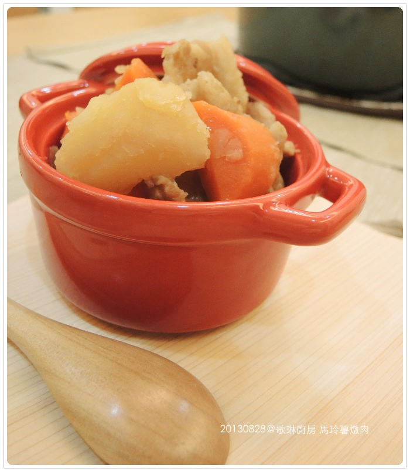
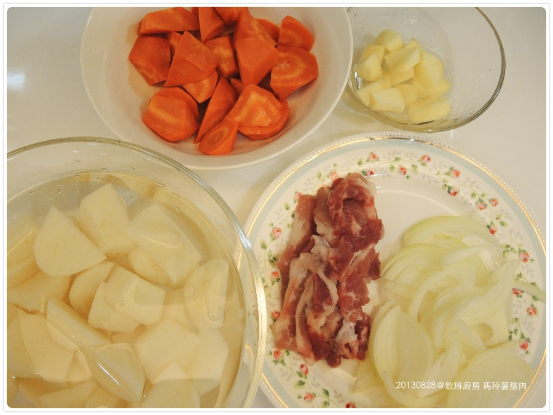
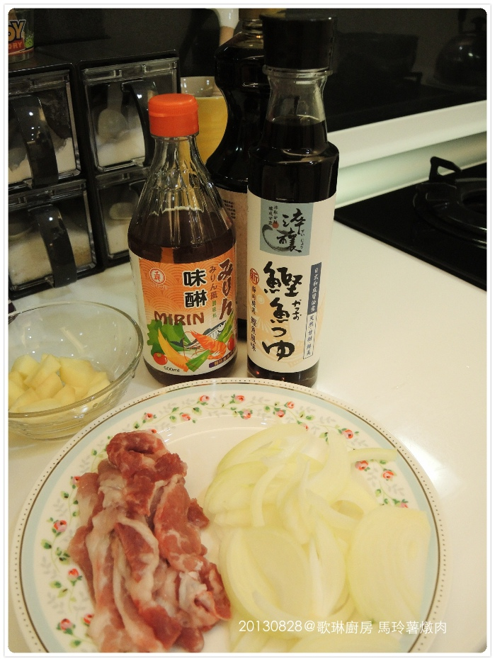
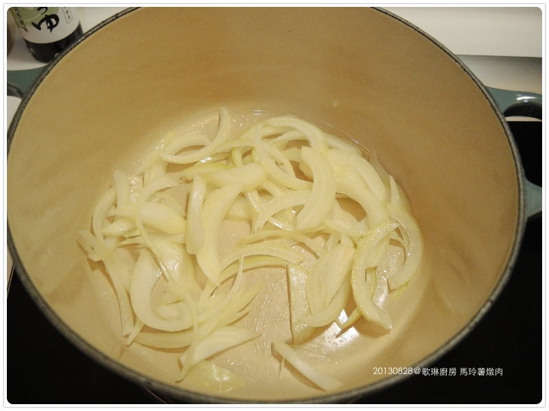
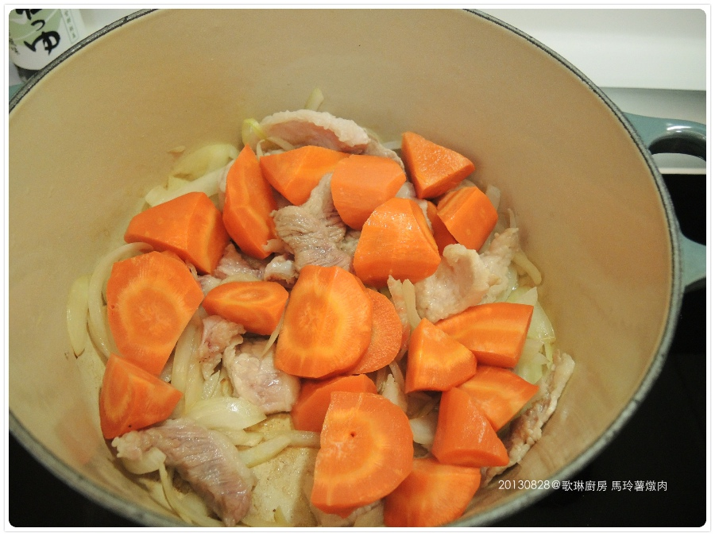
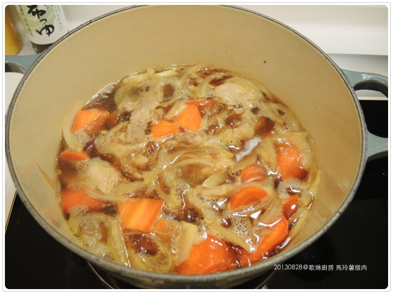
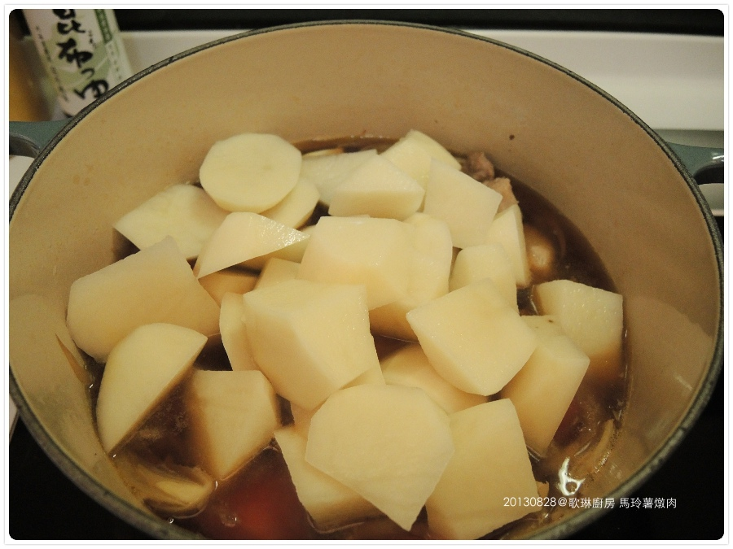
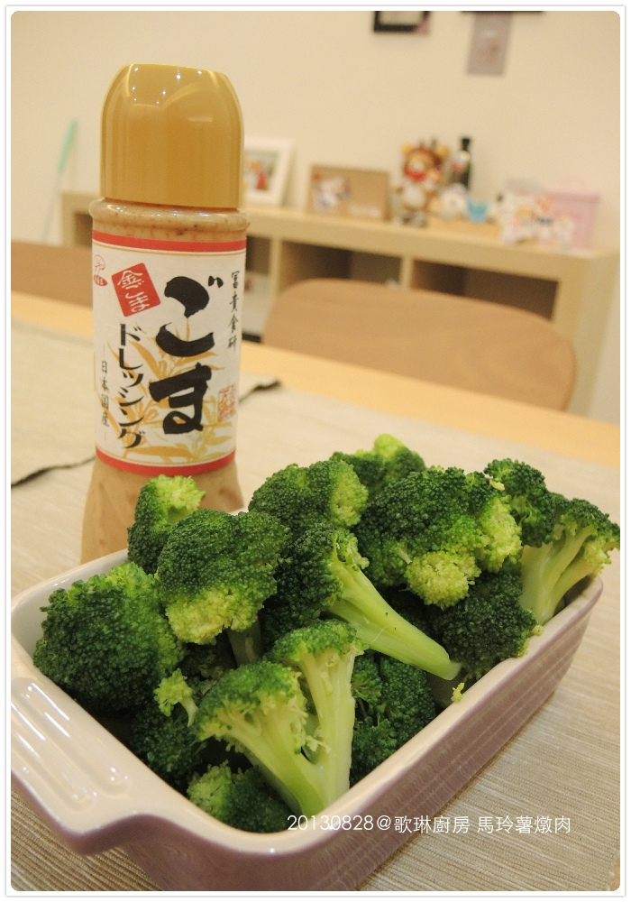
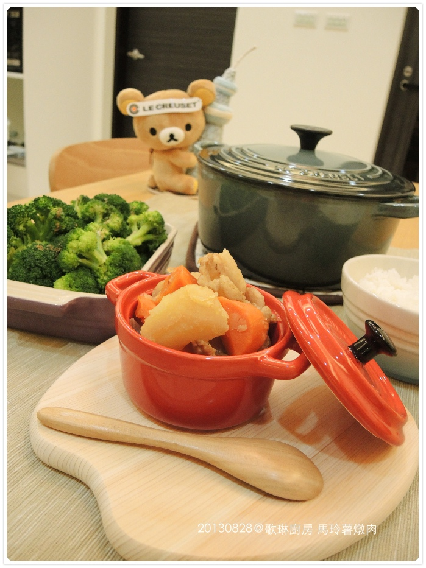
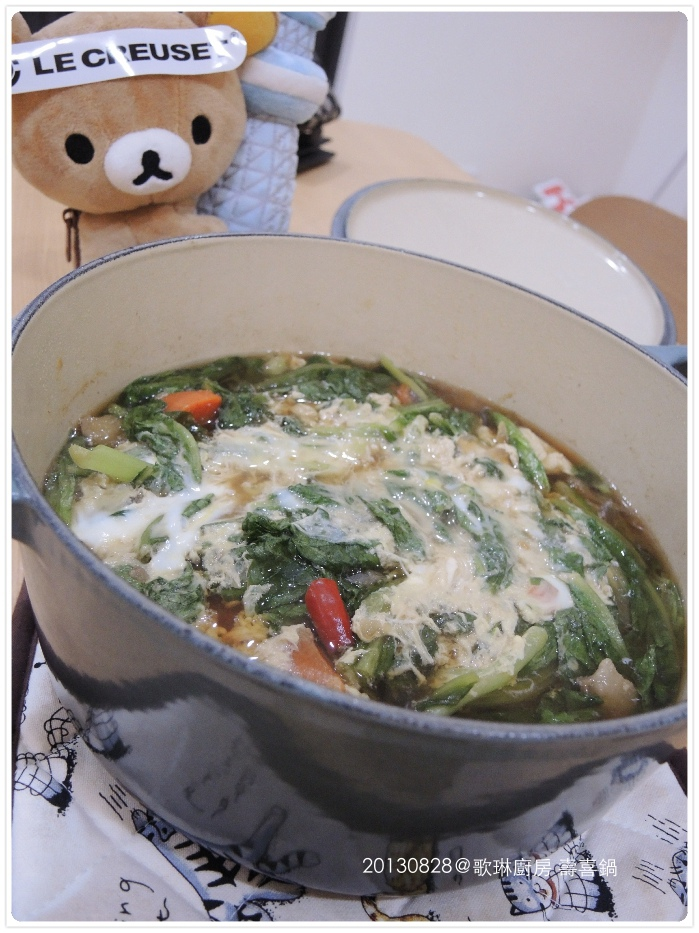

LC CREUSET 首開鍋料理：馬玲薯蘋果燉肉
這篇只是為了證明我不是買鍋擺好看的，所以把歌琳廚房完整紀錄下來 XD
LC鍋強項在燉煮，開鍋就選簡單食材又方便取得的燉物
食譜參考 蘿瑞娜的幸福廚房 蘋果馬玲薯燉肉
食材：
＊紅蘿蔔1支
＊馬鈴薯2顆
＊洋蔥半顆
＊豬五花

調味料：
＊水 500ml
＊醬油2大匙
＊鰹魚醬油2大匙
＊味醂1.5匙
＊米酒1大匙

先放少許油把洋蔥炒香（我最喜歡洋蔥！！！！）

接著放入五花肉片加入炒到變色後再放入紅蘿蔔一起拌炒
由於我本人非常討厭紅蘿蔔的天然腥臭味，一定要煮到軟爛沒味我才願意夾起放口中 XD
紅蘿蔔不易煮爛，所以我有先放到電鍋蒸熟（外鍋一杯水）

加入水及調味料後，以中小火煮到滾

再放入馬鈴薯一起燉煮
馬鈴薯太容易爛了，太早放攪一攪就全散了，但這次我還是太早放了

蓋上鍋蓋燉煮15分鐘後，再加入少許蘋果丁繼續燉煮10分鐘就可以上菜啦！
新鍋拍起來真美！！＞／／／＜

搭配的蔬菜是我家餐桌超級常見的綠花椰菜，我們兩都非常愛
汆湯後用costco買的芝麻醬拌一拌就超好吃又方便
LC的烤盤現在都被我拿來裝盤用，哈哈哈～放在餐桌上整個賞心悅目的 ＞／／／／＜

今天是無油煙料理 （拉拉熊頭上那條貼上去後就沒拿下來過了 XD）
假掰的擺盤，說真的看起來好吃很多很多！！！！
這道料理說真的我們兩個好像都沒吃過.....XD
自己做的口味道不道地不知道啦！！ 但真的很好吃～～簡單方便
LC不虧是燉物小幫手，食材很快就軟爛，超省瓦斯的
今天唯一失敗的是我太小看紅蘿蔔了，我都煮這麼久了居然還有腥味
下次不加它了，反正我也不喜歡 XD

＝＝＝＝＝＝＝＝＝＝＝＝＝＝＝＝
隔天晚上把剩餘的半鍋加了青菜、蛋、肉
再加一根朝天椒（我們家啫辣）
胡搞瞎搞還真像壽喜燒，湯頭帶點辣味好吃耶！超下飯的！ 
